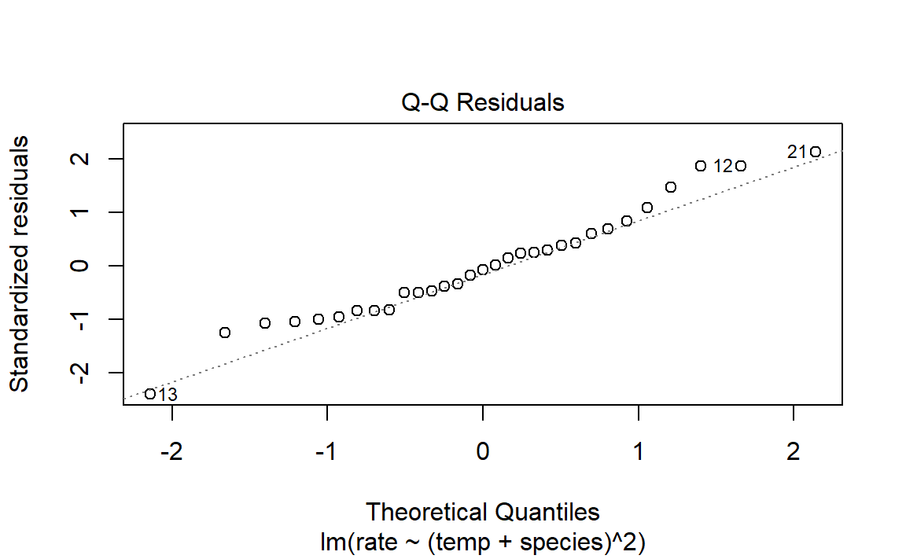

library(tidyverse)
#> ── Attaching core tidyverse packages ───────────────────── tidyverse 2.0.0 ──
#> ✔ dplyr 1.1.4 ✔ readr 2.1.5
#> ✔ forcats 1.0.0 ✔ stringr 1.5.1
#> ✔ ggplot2 3.5.2 ✔ tibble 3.2.1
#> ✔ lubridate 1.9.4 ✔ tidyr 1.3.1
#> ✔ purrr 1.1.0
#> ── Conflicts ─────────────────────────────────────── tidyverse_conflicts() ──
#> ✖ dplyr::filter() masks stats::filter()
#> ✖ dplyr::lag() masks stats::lag()
#> ℹ Use the conflicted package (<http://conflicted.r-lib.org/>) to force all conflicts to become errors
data(crickets, package = "modeldata")
names(crickets)
#> [1] "species" "temp" "rate"
# Plot the temperature on the x-axis, the chirp rate on the y-axis. The plot
# elements will be colored differently for each species:
ggplot(
crickets,
aes(x = temp, y = rate, color = species, pch = species, lty = species)
) +
# Plot points for each data point and color by species
geom_point(size = 2) +
# Show a simple linear model fit created separately for each species:
geom_smooth(method = lm, se = FALSE, alpha = 0.5) +
scale_color_brewer(palette = "Paired") +
labs(x = "Temperature (C)", y = "Chirp Rate (per minute)")
#> `geom_smooth()` using formula = 'y ~ x'3 A Review of R Modeling Fundamentals
在介绍如何使用tidymodels将整洁数据原则应用于用R构建模型之前，让我们先回顾一下在核心R语言（通常称为“base R”）中模型是如何创建、训练和使用的。本章简要介绍了base R中的一些约定，即使你根本不会使用base R来构建模型，了解这些约定也很重要。本章内容并非详尽无遗，但它为读者（尤其是那些刚接触R的读者）提供了最基本、最常用的模式。
R所基于的S语言，自Chambers和Hastie的著作（通常被称为《白皮书》）出版以来，就拥有了丰富的数据分析环境。这个版本的S语言引入了如今R用户所熟悉的标准基础设施组件，例如符号模型公式、模型矩阵和数据框，以及用于数据分析的标准面向对象编程方法。从那以后，这些用户界面并未发生实质性的变化。
An Example
为了演示在base R中建模的一些基本原理，让我们使用McDonald的实验数据，该数据由Mangiafico提供，研究的是环境温度与蟋蟀每分钟鸣叫次数之间的关系。收集的数据涉及两个物种：O.exclamationis和O.niveus。这些数据包含在一个名为crickets的数据框中，共有31个数据点。图3.1展示了这些数据，使用的是以下ggplot2代码：
这些数据对每个物种都呈现出相当线性的趋势。在给定温度下，O.exclamationis每分钟的鸣叫次数似乎比O.niveus更多。对于推断模型，研究人员在查看数据之前可能已经指定了以下零假设：
温度对鸣叫率没有影响。
不同物种的鸣叫率之间没有差异。
预测鸣叫率可能具有一定的科学或实际价值，但在本示例中，我们将重点关注推断。
Liner Regression
要在R中拟合普通线性模型，通常会使用lm()函数。该函数的重要参数包括模型公式和包含数据的数据框。这个公式是符号化的。例如，简单的公式：rate ~ temp。指定鸣叫率是结果（因为它位于波浪号~的左侧），而温度值是预测因子。假设数据中包含一个名为time的列，其中记录了获取测量值的一天中的时间，则公式可以是：rate ~ temp + time。这个公式象征性地表示，温度和时间应作为单独的主效应（主效应是包含单个预测变量的模型项）添加到模型中，而不是将时间和温度值相加。这些数据中没有时间测量值，但可以用同样的方式将物种添加到模型中：rate ~ temp + species。
物种不是一个数值型变量；在数据框中，它被表示为一个因子列，其水平为”O.exclamationis”和”O.niveus”。绝大多数模型函数无法处理非数值数据。对于物种，模型需要将物种数据编码为数值格式。最常见的方法是使用指示变量（也称为虚拟变量）来替代原始的定性值。在这种情况下，由于物种有两个可能的值，模型公式会通过添加一个新列将该列自动编码为数值，当物种是”O.exclamationis”时，该新列的值为0；当数据对应于”O.niveus”时，该新列的值为1。底层的公式机制会自动转换用于创建模型的数据集以及任何新数据点（例如，当模型用于预测时）的这些值。
假设存在五个物种而非两个。在这种情况下，模型公式会创建四个二进制列，作为其中四个物种的二进制指示器。该因子的参考水平（即第一个水平）总是会被排除在预测变量集之外。其原理是，如果你知道这四个指示变量的值，就能确定物种的取值。我们将在8.4.1节中更详细地讨论二进制指示变量。
模型公式rate ~ temp + species构建了一个针对每个物种具有相同斜率但不同y轴截距的模型。考虑到回归线的斜率也可能因物种而异，可以在模型中添加交互项。所谓交互项，是指某个变量对响应变量的影响，依赖于另一个或多个变量的取值（在图上直观地显示为斜率不同）。交互项可以通过几种不同的方式来指定（下面三种都是等价的），其中最基本的方式是使用冒号：
rate ~ temp + species + temp:species
# A shortcut can be used to expand all interactions containing
# interactions with two variables:
rate ~ (temp + species)^2
# Another shortcut to expand factors to include all possible
# interactions (equivalent for this example):
rate ~ temp * species除了能便捷地自动创建指示变量外，该公式还具备其他一些优点：
内嵌函数可用于公式中。例如，要使用温度的自然对数，我们可以创建公式
rate ~ log(temp)。由于公式默认是符号性(symbol)的，也可以使用恒等函数I()对预测变量应用实际数学运算。要使用华氏度单位，可通过公式rate ~ I( (temp * 9/5) + 32 )从摄氏度进行转换。R有许多在公式中很有用的函数。例如，
poly(x, 3)会为模型添加x的线性项、二次项和三次项作为主效应。splines包也有几个函数可用于在公式中创建非线性样条项。对于存在许多预测变量的数据集，可以使用句点快捷方式。句点代表了所有不在波浪号左侧的列的主效应。使用
~ (.)^3会将主效应以及所有双变量和三变量交互项添加到模型中。
回到我们的鸣虫（蟋蟀）问题，让我们使用双向交互模型。在本书中，我们对经过拟合的R模型对象使用后缀_fit。
interaction_fit <- lm(rate ~ (temp + species)^2, data = crickets)
# To print a short summary of the model:
interaction_fit
#>
#> Call:
#> lm(formula = rate ~ (temp + species)^2, data = crickets)
#>
#> Coefficients:
#> (Intercept) temp speciesO. niveus
#> -11.041 3.751 -4.348
#> temp:speciesO. niveus
#> -0.234这个输出有点难以阅读。对于物种指示变量，R将变量名（species）和因子水平（O.niveus）合并在一起，没有分隔符。
在深入探讨该模型的任何推断结果之前，应使用诊断图来评估拟合情况。我们可以对lm对象使用plot()方法。该方法会为对象生成一组四个图，每个图都展示了拟合的不同方面，如图3.2所示：
plot(interaction_fit)
Residual diagnostic plots for the linear model with interactions, which appear reasonable enough to conduct inferential analysis
Residuals-Fitted：描述残差与拟合值的关系，理想情况下，残差应该随机分布，没有明显的模式或趋势。如果出现明显的曲线或其他模式，可能表明模型未能捕捉到数据中的某些结构，或者存在非线性关系。图中还显示了几个标记点，如“21”、“13”等，这些可能是异常值或具有高影响力的观测点。
Q-Q Residuals：描述标准化残差值与正态分布理论值的关系，检查残差的分布是否接近正态分布。如果残差是正态分布的，那么它们应该大致沿着图中的直线排列。图中这种情况意味着残差的分布有轻微的偏斜或重尾。
Scale-Location：描述标准化残差的绝对值开方法后与拟合值的关系，检查残差的方差是否随拟合值的变化而变化，即方差齐性。如果存在异方差性，图中可能会显示出某种趋势或模式。
Residuals-Leverage：描述标准残差值与观测点leverage（或权重）之间的关系，同时添加Cook距离线，检查某个观测点是否对模型影响很大。如果某个观测点位于Cook距离线附近，则这些点对模型影响较大，例如“13”。
在评估表达式的技术细节方面，R语言是惰性的（而非急切的）。这意味着模型拟合函数通常会在最后一刻才计算尽可能少的量。例如，如果你想获取每个模型项的系数表，它不会随模型自动计算，而是通过summary()方法来计算。
Anova
我们接下来关于蟋蟀的工作是评估是否有必要纳入交互项。对于这个模型，最合适的方法是重新计算不含交互项的模型，并使用anova()方法。
# Fit a reduced model:
main_effect_fit <- lm(rate ~ temp + species, data = crickets)
# Compare the two:
anova(main_effect_fit, interaction_fit)
#> Analysis of Variance Table
#>
#> Model 1: rate ~ temp + species
#> Model 2: rate ~ (temp + species)^2
#> Res.Df RSS Df Sum of Sq F Pr(>F)
#> 1 28 89.350
#> 2 27 85.074 1 4.2758 1.357 0.2542该统计检验生成的p值为0.25。这意味着缺乏证据反驳模型不需要交互项这一零假设。因此，我们将对不含交互项的模型进行进一步分析。
应该重新评估残差图，以确保我们的理论假设足够有效，从而可以信任模型产生的p值（此处未展示这些图，但先透露一下：这些假设是有效的）。
我们可以使用summary()方法来查看每个模型项的系数、标准误差和p值：
summary(main_effect_fit)
#>
#> Call:
#> lm(formula = rate ~ temp + species, data = crickets)
#>
#> Residuals:
#> Min 1Q Median 3Q Max
#> -3.0128 -1.1296 -0.3912 0.9650 3.7800
#>
#> Coefficients:
#> Estimate Std. Error t value Pr(>|t|)
#> (Intercept) -7.21091 2.55094 -2.827 0.00858 **
#> temp 3.60275 0.09729 37.032 < 2e-16 ***
#> speciesO. niveus -10.06529 0.73526 -13.689 6.27e-14 ***
#> ---
#> Signif. codes: 0 '***' 0.001 '**' 0.01 '*' 0.05 '.' 0.1 ' ' 1
#>
#> Residual standard error: 1.786 on 28 degrees of freedom
#> Multiple R-squared: 0.9896, Adjusted R-squared: 0.9888
#> F-statistic: 1331 on 2 and 28 DF, p-value: < 2.2e-16每个物种的鸣叫率会随着温度每升高1度而增加3.6次鸣叫。p值表明，这个项具有很强的统计显著性。物种项的值为-10.07。这表明，在所有温度值下，O.niveus的鸣叫率大约比O.exclamationis每分钟少10次。与温度项类似，物种效应也与一个非常小的p值相关。
本分析中唯一的问题是截距值。它表明在0°C时，两个物种的每分钟鸣叫次数都是负数。但数据中温度最低仅为17.2°C，在0°C时对模型进行解释属于外推法，这不是个好主意，结论应仅限于观测到的温度范围。
如果我们需要在实验中未观测到的温度下估计鸣叫率，我们可以使用predict()方法。该方法需要模型对象和一个包含用于预测的新值的数据框。例如，模型对15°C至20°C之间温度下的O. exclamationis的鸣叫率估计可以通过以下方式计算：
new_values <- data.frame(species = "O. exclamationis", temp = 15:20)
predict(main_effect_fit, new_values)
#> 1 2 3 4 5 6
#> 46.83039 50.43314 54.03589 57.63865 61.24140 64.84415请注意，传递给predict()方法的是species的非数值型值，而非数值型的二元指示变量。
Summary
虽然本分析显然并未全面展示R的建模能力，但它确实强调了对本书其余部分而言很重要的一些主要功能：
这种语言具有富有表现力的语法，可用于为简单模型和相当复杂的模型指定模型项。
R语言的公式方法在建模方面有许多便利之处，这些便利之处在生成预测时也会应用于新数据。
有许多辅助函数（例如
anova()、summary()和predict()），你可以在创建拟合模型后使用它们来进行特定的计算。
最后，如前所述，该框架于1992年首次发表。其中的大部分理念和方法都是在那个时期发展出来的，但直到今天仍然具有显著的相似性。这凸显出S语言以及由此衍生的R语言从一开始就专为数据分析而设计。
What Does the R Formula Do?
R模型公式被许多建模包所使用。它通常有多种用途：
公式定义了模型所使用的数据框中的列。
标准的R机制利用该公式将列编码为适当的格式。
数据框中列的角色由该公式定义。
在很大程度上，从业者对公式功能的理解主要受最后一个用途的影响。我们在输入公式时，注意力往往集中在声明应如何使用这些列上。例如，我们之前讨论的规范就以特定方式设置了要使用的预测变量：(temp + species)^2。看到这个公式时，我们的关注点在于，存在两个预测变量，模型应当包含它们的主效应和双向交互项。然而，这个公式还意味着，由于species是一个因子，它还应该为这个预测变量创建指示变量列（参见第8.4.1节），并将这些列与temp列相乘来创建交互项。这种转换体现了我们关于编码的第二点；公式还定义了每一列的编码方式，并且可以创建原始数据中不存在的额外列。
这一点很重要，在本书中会多次出现，尤其是当我们在第8章及以后章节讨论更复杂的特征工程时。R语言中的公式存在一些局限性，而我们克服这些局限性的方法涉及到所有三个方面。
Why Tidiness Is Important for Modeling
R’s diversity
R的优势之一在于，它鼓励开发者创建符合自身需求的用户界面。举个例子，以下是在名为plot_data的数据框中创建两个数值变量的散点图的三种常见方法：
在这三种情况下，不同的开发人员团队为同一任务设计了三种截然不同的界面。每种界面都各有优缺点。相比之下，《Python开发者指南》在解决问题时信奉这样一种理念：“There should be one – and preferably only one – obvious way to do it.” 在这方面，R与Python有很大不同。R的接口多样性的一个优势在于，它可以随着时间的推移不断发展，满足不同用户的不同需求。不幸的是，部分语法多样性源于对开发代码者需求的关注，而非对使用代码者需求的关注。各软件包之间的不一致性可能会成为R用户的绊脚石。
假设你的建模项目有一个包含两个类别的结果。你可以从多种统计模型和机器学习模型中进行选择。为了为每个样本生成类别概率估计，模型函数通常会有一个对应的predict()方法。然而，这些方法用于生成类别概率预测的参数值存在显著差异，这种差异即使对于有经验的用户来说也可能难以应对。不同模型的这些参数值示例如表3.1所示。
| Function | Package | Code |
|---|---|---|
lda() |
MASS | predict(object) |
glm() |
stats | predict(object, type = “response”) |
gbm() |
gbm | predict(object, type = “response”, n.trees) |
mda() |
mda | predict(object, type = “posterior”) |
rpart() |
rpart | predict(object, type = “prob”) |
| various | RWeka | predict(object, type = “probability”) |
logitboost() |
LogitBoost | predict(object, type = “raw”, nIter) |
pamr.train() |
pamr | pamr.predict(object, type = “posterior”) |
请注意，最后一个示例使用了一个自定义函数来进行预测，而不是使用更常见的predict()接口（即predict()的泛函方法）。这种不一致性是日常使用R语言进行建模的一个障碍。
Missing value
作为不可预测性的另一个例子，R语言中有关缺失数据的约定处理方式并不一致。一般规则是缺失数据会产生更多缺失数据；例如，一组包含缺失数据点的值的平均值本身也是缺失的，依此类推。当模型进行预测时，绝大多数模型都要求所有预测变量具有完整的值。在这一点上，R语言内置了几种通过通用函数na.action()实现的选项。这一函数设定了函数在遇到缺失值时的处理策略。两种最常见的策略是na.fail()和na.omit()。前者在存在缺失数据时会产生错误，而后者在计算前通过个案删除的方式移除缺失数据。从我们之前的例子来看：
# Add a missing value to the prediction set
new_values$temp[1] <- NA
# The predict method for `lm` defaults to `na.pass`:
predict(main_effect_fit, new_values)
#> 1 2 3 4 5 6
#> NA 50.43314 54.03589 57.63865 61.24140 64.84415
# Alternatively
predict(main_effect_fit, new_values, na.action = na.fail)
#> Error in na.fail.default(structure(list(temp = c(NA, 16L, 17L, 18L, 19L, : missing values in object
predict(main_effect_fit, new_values, na.action = na.omit)
#> 2 3 4 5 6
#> 50.43314 54.03589 57.63865 61.24140 64.84415从用户的角度来看，na.omit()可能会带来问题。在我们的示例中，new_values有6个，但使用na.omit()只会返回5个。为了对此进行调整，如果要将预测结果合并到new_values中，用户就必须确定哪一行存在缺失值，并在适当的位置插入一个缺失值。虽然预测函数将na.omit()用作其缺失数据处理策略的情况很少见，但这种情况确实会发生。那些确定这是其代码中错误原因的用户会对此印象非常深刻。
为了解决此处描述的使用问题，tidymodels包设定了一系列设计目标。tidymodels的大多数设计目标都属于tidyverse中已有的“为人类而设计”这一范畴（Wickham et al. 2019），但这些目标在建模代码方面有特定的应用。此外，tidymodels还有一些额外的设计目标，作为对tidyverse设计目标的补充。以下是一些例子：
R具有出色的面向对象编程能力，我们利用这一点来替代创建新的函数名称（例如一个假设的新
predict_samples()函数）。合理的默认值非常重要。此外，当更适合迫使用户做出选择时，函数的参数不应有默认值（例如，
read_csv()的文件名参数）。同样，那些默认值可以从数据中推导出来的参数值也应该如此。例如，对于
glm()函数，family参数可以检查结果中数据的类型，并且如果没有提供family参数，就可以在内部确定一个默认值。函数应该接受用户已有的数据结构，而非开发者想要的数据结构。例如，模型函数的唯一接口不应局限于矩阵。用户往往会有非数值型的预测变量，比如因子。
这些理念中有许多在tidymodels的模型实现指南中都有阐述。在后续章节中，我们将举例说明一些现存的问题及其解决方案。
broom::tidy()
一些现有的R包提供了统一的接口来协调这些异构的建模API，例如caret和mlr。tidymodels框架与它们类似，采用了统一的函数接口，并确保函数名称和返回值的一致性。但它在其固执己见的设计目标和建模实现方面有所不同，本书将对此进行详细讨论。
我们在本书中一直使用的broom::tidy()函数是另一个用于标准化R对象结构的工具。它能以更易用的格式返回多种类型的R对象。例如，假设正根据预测变量与结果列的相关性对其进行筛选。使用purrr::map()函数，cor.test()函数的结果可以以列表形式为每个预测变量返回：
corr_res <- map(mtcars %>% select(-mpg), cor.test, y = mtcars$mpg)
# The first of ten results in the vector:
corr_res[[1]]
#>
#> Pearson's product-moment correlation
#>
#> data: .x[[i]] and mtcars$mpg
#> t = -8.9197, df = 30, p-value = 6.113e-10
#> alternative hypothesis: true correlation is not equal to 0
#> 95 percent confidence interval:
#> -0.9257694 -0.7163171
#> sample estimates:
#> cor
#> -0.852162如果我们想在图表中使用这些结果，假设检验结果的标准格式并不是很有用。tidy()方法可以将其以tibble的形式返回，并带有标准化的名称：
这些结果可以“堆叠”起来并添加到ggplot()中，如图3.3所示。
corr_res %>%
# Convert each to a tidy format; `map_dfr()` stacks the data frames
map_dfr(tidy, .id = "predictor") %>%
ggplot(aes(x = fct_reorder(predictor, estimate))) +
geom_point(aes(y = estimate)) +
geom_errorbar(aes(ymin = conf.low, ymax = conf.high), width = .1) +
labs(x = NULL, y = "Correlation with mpg")mtcars data set使用base R中的函数也可以创建这样的图表，但自动重新格式化结果能使代码更简洁，且出错的可能性更小。
Combining Base R Models and the Tidyverse
base R或其他R包中的建模函数可以与tidyverse结合使用，尤其是与dplyr、purrr和tidyr包。例如，如果我们想为每个蟋蟀物种拟合单独的模型，我们可以首先使用dplyr::group_nest()按该列拆分蟋蟀数据：
split_by_species <-
crickets %>%
group_nest(species)
split_by_species
#> # A tibble: 2 × 2
#> species data
#> <fct> <list<tibble[,2]>>
#> 1 O. exclamationis [14 × 2]
#> 2 O. niveus [17 × 2]data列包含来自crickets的rate列和temp列，并以列表列的形式呈现。基于此，purrr::map()函数可以为每个物种创建单独的模型：
要收集这些模型中每个模型的系数，请使用broom::tidy()将它们转换为一致的数据框格式，以便可以对其进行拆嵌：
model_by_species %>%
mutate(coef = map(model, tidy)) %>%
select(species, coef) %>%
unnest(cols = c(coef))
#> # A tibble: 4 × 6
#> species term estimate std.error statistic p.value
#> <fct> <chr> <dbl> <dbl> <dbl> <dbl>
#> 1 O. exclamationis (Intercept) -11.0 4.77 -2.32 3.90e- 2
#> 2 O. exclamationis temp 3.75 0.184 20.4 1.10e-10
#> 3 O. niveus (Intercept) -15.4 2.35 -6.56 9.07e- 6
#> 4 O. niveus temp 3.52 0.105 33.6 1.57e-15列表列(list-column)在建模项目中可能非常强大。列表列可为任何类型的R对象提供容器，从拟合模型本身到重要的数据框结构均可容纳。
The tidymodels Metapackage
tidyverse（第2章）是作为一组模块化的R包设计的，每个包的范围都相当狭窄。tidymodels框架采用了类似的设计。例如，rsample包专注于数据拆分和重采样。尽管重采样方法对建模的其他活动（如衡量性能）至关重要，但它们存在于单个包中，而性能指标则包含在另一个独立的包yardstick中。采用这种模块化包的理念有很多好处，从更简洁的模型部署到更顺畅的包维护。
这种理念的缺点是tidymodels框架中有很多包。为了弥补这一点，tidymodels包（你可以把它看作是一个像tidyverse包一样的元包）会加载一组核心的tidymodels和tidyverse包。加载该包会显示哪些包被附加了：
library(tidymodels)
#> ── Attaching packages ─────────────────────────────────── tidymodels 1.4.1 ──
#> ✔ dials 1.4.2 ✔ tailor 0.1.0
#> ✔ infer 1.0.9 ✔ tune 2.0.0
#> ✔ modeldata 1.5.1 ✔ workflows 1.3.0
#> ✔ parsnip 1.3.3 ✔ workflowsets 1.1.1
#> ✔ recipes 1.3.1 ✔ yardstick 1.3.2
#> ✔ rsample 1.3.1
#> ── Conflicts ────────────────────────────────────── tidymodels_conflicts() ──
#> ✖ scales::discard() masks purrr::discard()
#> ✖ dplyr::filter() masks stats::filter()
#> ✖ recipes::fixed() masks stringr::fixed()
#> ✖ dplyr::lag() masks stats::lag()
#> ✖ yardstick::spec() masks readr::spec()
#> ✖ recipes::step() masks stats::step()如果你用过tidyverse，你会注意到一些熟悉的名字，因为有几个tidyverse包，比如dplyr和ggplot2，会和tidymodels包一起加载。我们已经说过，tidymodels框架将tidyverse的原则应用到建模中，而实际上，tidymodels框架也建立在一些最基础的tidyverse包之上，比如这些包。
加载这个元包还会显示是否存在与之前加载的包的函数命名冲突。作为命名冲突的一个例子，在加载tidymodels之前，调用filter()函数会执行stats包中的该函数。加载tidymodels之后，它会执行同名的dplyr函数。
有几种处理命名冲突的方法。可以使用函数的命名空间来调用该函数（例如，stats::filter()）。这并非不好的做法，但确实会降低代码的可读性。
另一个选择是使用conflicted包。我们可以设置一条规则，该规则在R会话结束前一直有效，以确保如果代码中没有指定命名空间，某个特定的函数将始终运行。例如，如果我们更倾向于使用前面提到的函数的dplyr版本：
library(conflicted)
conflict_prefer("filter", winner = "dplyr")为方便起见，tidymodels包含一个函数，该函数可捕获我们可能遇到的大多数常见命名冲突：
tidymodels_prefer(quiet = FALSE)
#> [conflicted] Will prefer agua::refit over any other package.
#> [conflicted] Will prefer DALEX::explain over any other package.
#> [conflicted] Will prefer dials::Laplace over any other package.
#> [conflicted] Will prefer dials::max_rules over any other package.
#> [conflicted] Will prefer dials::neighbors over any other package.
#> [conflicted] Will prefer dials::prune over any other package.
#> [conflicted] Will prefer dials::smoothness over any other package.
#> [conflicted] Will prefer dplyr::collapse over any other package.
#> [conflicted] Will prefer dplyr::combine over any other package.
#> [conflicted] Will prefer dplyr::filter over any other package.
#> [conflicted] Will prefer dplyr::rename over any other package.
#> [conflicted] Will prefer dplyr::select over any other package.
#> [conflicted] Will prefer dplyr::slice over any other package.
#> [conflicted] Will prefer ggplot2::`%+%` over any other package.
#> [conflicted] Will prefer ggplot2::margin over any other package.
#> [conflicted] Will prefer parsnip::bart over any other package.
#> [conflicted] Will prefer parsnip::fit over any other package.
#> [conflicted] Will prefer parsnip::mars over any other package.
#> [conflicted] Will prefer parsnip::pls over any other package.
#> [conflicted] Will prefer purrr::cross over any other package.
#> [conflicted] Will prefer purrr::invoke over any other package.
#> [conflicted] Will prefer purrr::map over any other package.
#> [conflicted] Will prefer recipes::discretize over any other package.
#> [conflicted] Will prefer recipes::step over any other package.
#> [conflicted] Will prefer recipes::update over any other package.
#> [conflicted] Will prefer rsample::populate over any other package.
#> [conflicted] Will prefer scales::rescale over any other package.
#> [conflicted] Will prefer themis::step_downsample over any other package.
#> [conflicted] Will prefer themis::step_upsample over any other package.
#> [conflicted] Will prefer tidyr::expand over any other package.
#> [conflicted] Will prefer tidyr::extract over any other package.
#> [conflicted] Will prefer tidyr::pack over any other package.
#> [conflicted] Will prefer tidyr::unpack over any other package.
#> [conflicted] Will prefer tune::parameters over any other package.
#> [conflicted] Will prefer tune::tune over any other package.
#> [conflicted] Will prefer yardstick::get_weights over any other package.
#> [conflicted] Will prefer yardstick::precision over any other package.
#> [conflicted] Will prefer yardstick::recall over any other package.
#> [conflicted] Will prefer yardstick::spec over any other package.
#> [conflicted] Removing existing preference.
#> [conflicted] Will prefer recipes::update over Matrix::update.
#> ── Conflicts ───────────────────────────────────────── tidymodels_prefer() ──请注意，使用此函数意味着您同意对所有命名空间冲突使用conflicted::conflict_prefer()，这会将每个冲突都视为错误，并强制您选择要使用的函数。tidymodels::tidymodels_prefer()函数会处理tidymodels函数中最常见的冲突，但您需要自行处理R会话中的其他冲突。
Chapter Summary
本章回顾了创建和使用模型的核心R语言约定，这些约定是本书其余部分的重要基础。公式运算符是在R中拟合模型时一个富有表现力且重要的方面，并且在非tidymodels函数中通常有多种用途。传统的R建模方法存在一些局限性，特别是在流畅地处理和可视化模型输出方面。tidymodels元包将tidyverse设计理念应用于建模包。